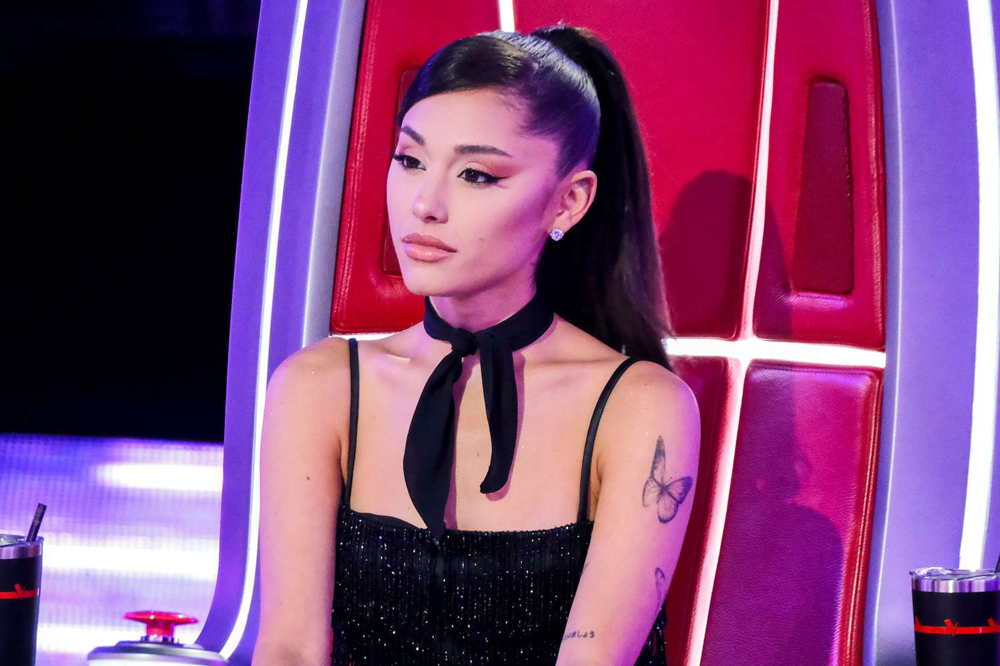
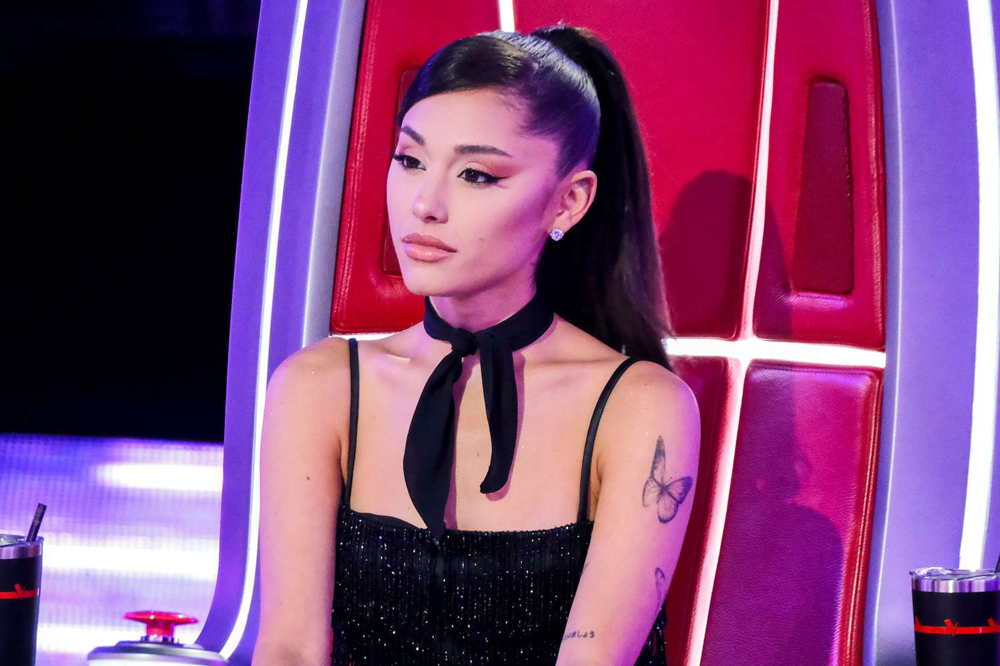

Life of Ariana Grande
Ariana Grande was born in Boca Raton, Florida where she rose to fame of being a worldwide known actress and singer. She is known for her four-octave vocal range, high ponytail, and her smooth career of pop-chart music and acting.
Early life and Career
Ariana Grande was born on June 26th, 1993, in Boca Raton, Florida, and became performing at her local theatre places and public functions. She became noticed in 2008 as she starred on a Broadway musical 13, then was a major character on the teen pop shows, Victorious and Sam and cat. Afterwards, she adapted to music and topped the Billboard 200 with her album Yours Truly, which instituted her career as a global pop sensation.
Ariana's Fame
With her 2013 album Yours Truly that included the song, “The Way” really had her audience notice her powerful voice, which then brought her to immediate fame and success. Ariana’s subsequent albums that all included songs like, Thank you next, My Everything, Dangerous Women, and sweetheart, solidified her career in the pop sensation. As she developed her persona into one of the most notable voices in contemporary pop, she won numerous Grammy awards, and worked with other celebrities like Lady Gaga and the Weeknd.
Discography
- Yours Truly (2013)
- My Everything (2014)
- Dangerous Women (2016)
- Sweetener (2018)
- Thank u next (2019)
- Positions (2020)
- Eternal Sunshine (2024)
Media Craze surrounding Ariana Grande and her fame
- Thank U Next and 7 Rings
- Tabloid attention based on her personal life like her relationships
- Wicked movie
Gallery
 
